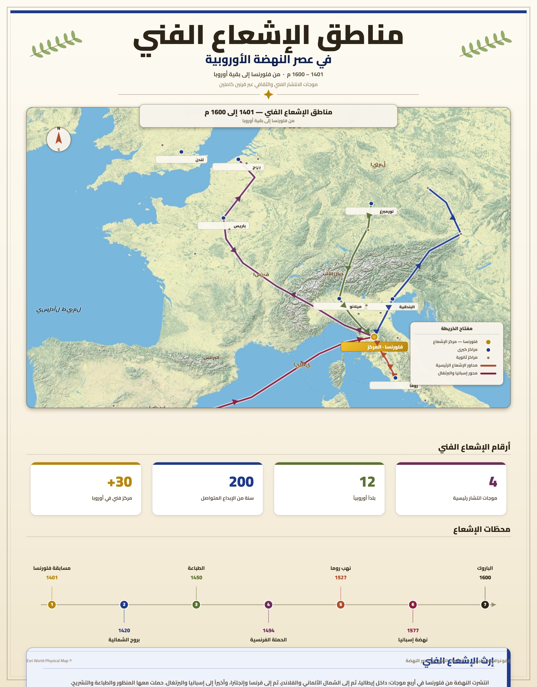
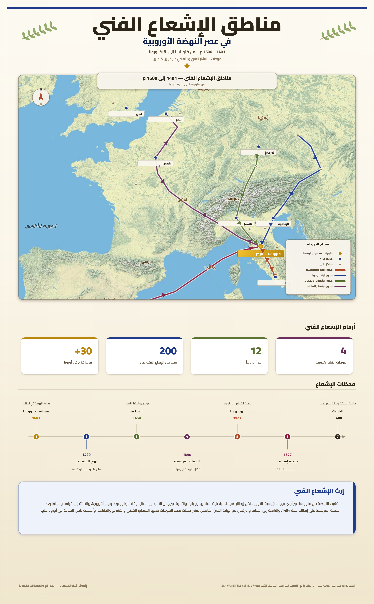

تمارين – النهضة الأوروبية
- النهضة:
- حركة فكرية وفنية وأدبية وعلمية انطلقت من إيطاليا أثناء القرن XIV م وانتشرت في أوروبا خلال القرنين الموالين، وأرست أسس الفكر الحديث القائم على العقل والتجربة والنقد. جعلت الإنسان محور اهتمامها، وحرّرت العقل الأوروبي من قيود الكنيسة، ومهّدت لانطلاق العصر الحديث.
- الحركة الإنسانية:
- حركة فكرية انطلقت من إيطاليا أثناء القرن XIV م وانتشرت في بقية أرجاء أوروبا خلال القرنين الموالين بفضل مشاهير روادها أمثال إيرازم دي روتردام وبفضل تطوّر وسائل الطباعة ومساندة التجار الأثرياء الإيطاليين. اهتمّ روّادها بدراسة الآداب الإنسانية انطلاقا من إحياء المؤلّفات الإغريقية والرومانية القديمة، واعتمدوا الأسلوب النقدي القائم على حرية المناقشة والتفكير. جعلت الإنسان محور كلّ الاهتمامات.
- الأسلوب النقدي:
- أسلوب منهجي جديد في معالجة القضايا نشأ عن الحركة الإنسانية، يعتمد حرية المناقشة والتفكير في كافة المبادئ بما فيها الدين والسياسة، ويعتبر أن الحقيقة غير مطلقة ولا يمكن التوصل إليها إلا عن طريق الحوار. وهو أمر طالما حرمته الكنيسة حتى ذلك التاريخ.
- الطباعة:
- ثورة تقنية ومعرفية هائلة أحدثها الألماني يوحنّا غوتنبرغ حوالي سنة 1450 م حين ابتكر طريقة جديدة تعتمد الحروف المنقولة المسكوبة في معدن الرصاص. ساهمت في نشر الفكر الجديد رغم محاولات الكنيسة والسلطة السياسية فرض الرقابة عليها، فقد طبع في أوروبا خلال القرن XVI م أكثر من 250 مليون نسخة كتاب.
| الفترة | عدد الكتب المطبوعة (مليون نسخة) |
|---|---|
| القرن XV (1450-1500) | 20 |
| القرن XVI (1500-1600) | 250 |
المصدر: معطيات الدرس حول تطوّر الطباعة في أوروبا (تقديرات)


تمثل الخريطة مراكز الأنسنة بأوروبا خلال القرن السادس عشر الميلادي: مركز الانطلاق: إيطاليا (فلورنسا، روما، البندقية، ميلانو، نابولي)، حيث انطلقت الحركة الإنسانية أثناء القرن XIV م. مراكز الانتشار: انتقلت الحركة إلى بقية أوروبا خلال القرنين XV وXVI: - فرنسا: باريس (معهد فرنسا - Collège de France)، ليون. - إنجلترا: لندن، أكسفورد، كامبريدج. - ألمانيا: مدن الراين، ومراكز الطباعة (ماينز حيث اخترع غوتنبرغ الطباعة). - إسبانيا: إشبيلية، سلامنكا. - هولندا (الأراضي المنخفضة): أنفارس، أمستردام (مراكز طباعة وتبادل فكري). - سويسرا: بازل، جنيف (نشاط إيرازم وحركة الإصلاح الديني). العوامل المساعدة على الانتشار: 1. تطوّر وسائل الطباعة التي سهّلت نشر الكتب والمؤلّفات. 2. مساندة التجار الأثرياء والملوك (فرانسوا الأول، لوران دي ميديسي). 3. تأسيس المعاهد والأكاديميات والجمعيات الفكرية. 4. تنقّل المفكّرين والروّاد بين البلدان الأوروبية. النتيجة: تحوّلت الحركة الإنسانية من ظاهرة إيطالية إلى ظاهرة أوروبية شاملة، وتمكّنت من تأسيس فكر جديد نقدي وعلمي مهّد لانطلاق العصر الحديث.
- مقدمة: تحديد النهضة الأوروبية كتحوّل حاسم في تاريخ الإنسانية.
- تطوير: أولاً. الحركة الإنسانية؛ ثانياً. النهضة الفنية؛ ثالثاً. النهضة الأدبية؛ رابعاً. النهضة السياسية.
- خاتمة: النهضة الأوروبية إيذانًا ببداية العصر الحديث.
مقدمة
تُعدّ النهضة الأوروبية تحوّلًا حاسمًا في تاريخ الإنسانية، إذ انطلقت من إيطاليا أثناء القرن XIV م وانتشرت في بقية أرجاء أوروبا خلال القرنين الموالين، فحرّرت العقل الأوروبي من قيود الكنيسة وأرست أسس الفكر الحديث. وقد تجلّت مظاهر هذا الفكر الجديد في مجالات متعدّدة: الحركة الإنسانية، الفن، الأدب والسياسة.
تطوير
أولاً. الحركة الإنسانية
اهتمّ روّاد الحركة الإنسانية بدراسة الآداب الإنسانية انطلاقا من إحياء المؤلّفات الإغريقية والرومانية القديمة (أفلاطون، سقراط، مسيير وفي)، واعتمدوا في ذلك على الكتب العربية التي تُرجمت بالأندلس وصقلية قبل سقوطهما بأيدي المسيحيين. ولم يكتفوا بإعادة نشرها بل أخضعوها للتحليل والنقد، فنشأ الأسلوب النقدي القائم على حرية المناقشة والتفكير. وهكذا أصبح الإنسان محور كلّ الاهتمامات، ومن أبرز روّادها إيرازم دي روتردام وليوناردو دا فينشي.
ثانياً. النهضة الفنية
انطلقت من إيطاليا أثناء القرن XV م وامتدّت إلى بقية أوروبا، وشكّلت منعرجا حاسما في تاريخ الفنون. اتّسم فنّ النهضة بالدقّة والواقعيّة وتواضع "الدّيكور" على خلاف التيّار الباروكي، واعتمد على التراث الإغريقي-اللاتيني، وقدّم الإنسان في أبهى صورة، وطبّق القواعد والمقاييس الرياضية. ومن أبرز روّاده ليوناردو دا فينشي الذي أبدع لوحة الجوكوندة (Joconde).
ثالثاً. النهضة الأدبية
شهدت الحياة الأدبية نشاطا حثيثا، وجعل أدباء هذه الفترة من الإنسان موضوعهم الرئيسي، فعملوا على تحليل عواطفه وتناقضاته. ومن أشهر كتّاب القرن XVI: الفرنسيان رابلي (صاحب "بنتغريال" ورسالة فارقنتوا) ومونتاني (صاحب "الرّسائل")، والإنجليزي وليام سكسبير (صاحب "عطيل، هملت، تاجر البندقية، روميو وجولييت"). وفي القرن XVII برز الإسباني سرفانتس ("دون كي شوت") والفرنسي موليير ("مدرسة الأزواج، مدرسة النّساء والبخيل").
رابعاً. النهضة السياسية
برز مفكّرون استهدفوا عبر كتاباتهم زعزعة الأنظمة الشمولية اعتمادا على دراسات التاريخ، فظهرت العلوم السياسية الحديثة. ومن أبرز روّادها في القرن XVI الإيطالي نيكولاس ماكيافلّي صاحب كتاب "الأمير" (Le Prince) الذي دعا فيه إلى الفصل بين الدين والسياسة واعتمد مبدأ "الغاية تبرّر الوسيلة". وفي القرن XVII برز الإنجليزي جون لوك بكتابه "حول الحكم المدني" الذي دعا إلى استناد السلطة على "عقد اجتماعي" بين الحاكم والمحكومين، ففنّد بذلك نظرية "الحق الإلاهي".
خاتمة
هكذا كانت النهضة الأوروبية إيذانًا ببداية العصر الحديث، إذ أعادت تشكيل الفكر الأوروبي في مختلف مجالاته ودفعت أوروبا في مقدّمة المشهد العالمي.